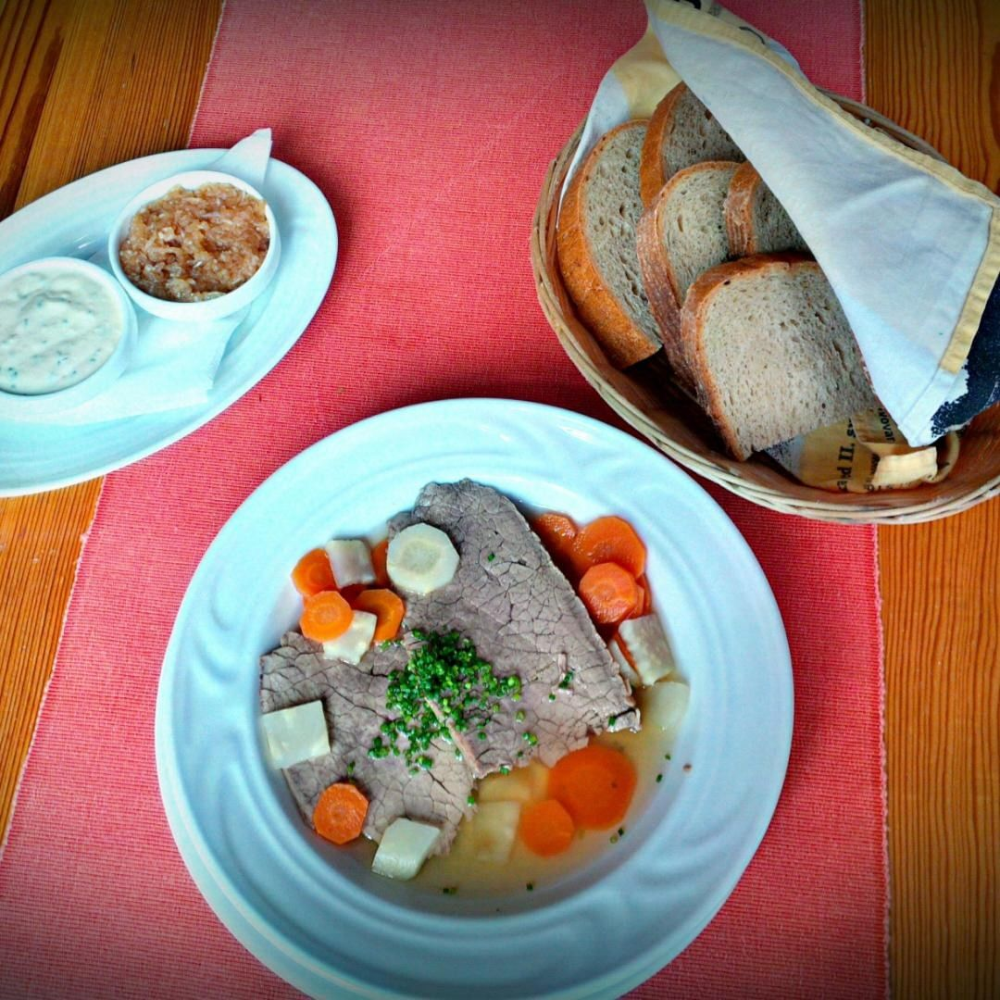

Pažítková omáčka podľa @hostinec_u_vlachu — Normy Jedál
Tafelspitz - vyhlášené jídlo Rakouska-Uherska a nyní téměř národní pokrm Rakouska. Nyní ve víkendové nabídce Hostince u Vlachů.
Tafelspitz - the famous dish of Austria monarchy and now almost a national dish of Austria. This weekend in the menu ať the Hostinec u Vlachů.
#tafelspitz #rakousko #rakouskouhersko #narodnipokem #specialita #varenehovezi #zelenina #pecivo #pazitkovaomacka #krensjablky #austria #speciality #nacionaldish #tisnov #cookedbeef #vegetable #bread #chive #chivesaouce #horseradish #hostinecuvlachu #hostinec_u_vlachu #restaurant #jamne #tisnov #moravia #southmoravia #czech